Meetup 1: Data Science Workflow and Toolkit
2025-08-25
What is Data Science?
- Data science is a “discipline that allows you to transform raw data into understanding, insight, and knowledge”
- I hear often: “Data Science is just statistics with a clever brand name”
- Is this a misconception?
Data Science Workflow
Consider this visualization of the process for converting raw data into knowledge:
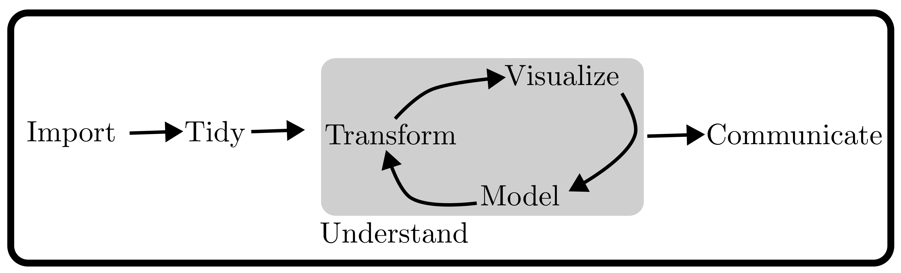Figure from text
Data Science Workflow
Consider this visualization of the process for converting raw data into knowledge:

Figure from text
Load the data from files into software
Data Science Workflow
Consider this visualization of the process for converting raw data into knowledge:
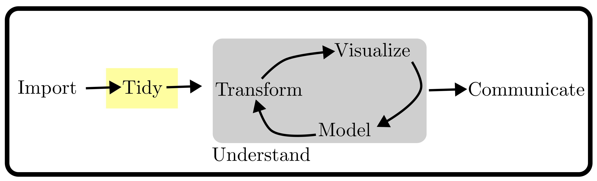Figure from text
Tidy the data so it is stored in a consistent way
Data Science Workflow
Consider this visualization of the process for converting raw data into knowledge:
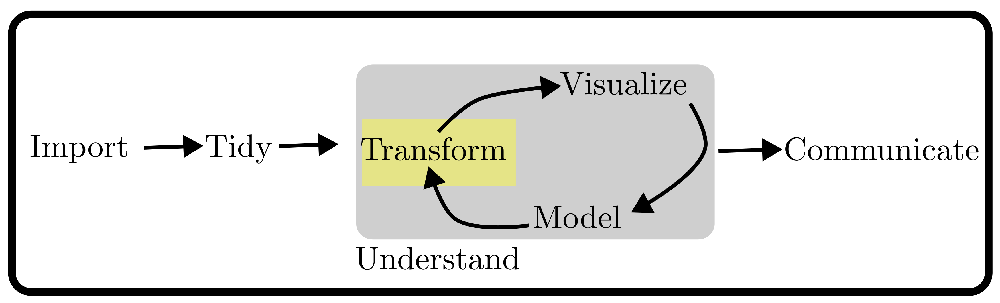Figure from text
Transform the data to focus our analysis on observations of interest
Data Science Workflow
Consider this visualization of the process for converting raw data into knowledge:

Figure from text
Visualize the data to find relationships, problems, and pose questions
Data Science Workflow
Consider this visualization of the process for converting raw data into knowledge:
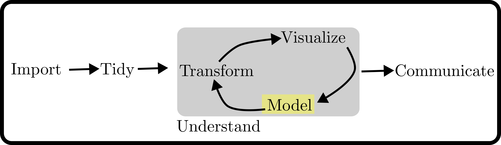Figure from text
Model the data to answer questions precisely using statistics
Data Science Workflow
Consider this visualization of the process for converting raw data into knowledge:
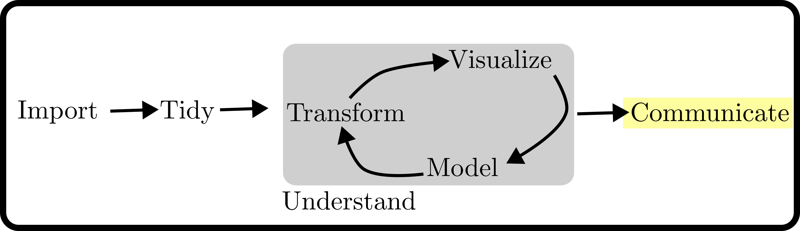Figure from text
Communicate to share results with others
Data Science Workflow
Consider this visualization of the process for converting raw data into knowledge:
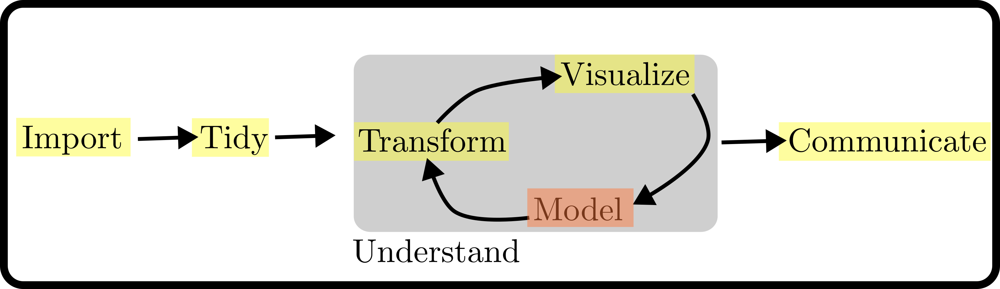Figure from text
This class will focus on everything but modeling, i.e. the part of Data Science that isn’t statistics
Modeling can be small part of Data Science projects
It is said that 80% of time in data science projects is spent on data mining, cleaning, tidying, exploratory data analysis, etc
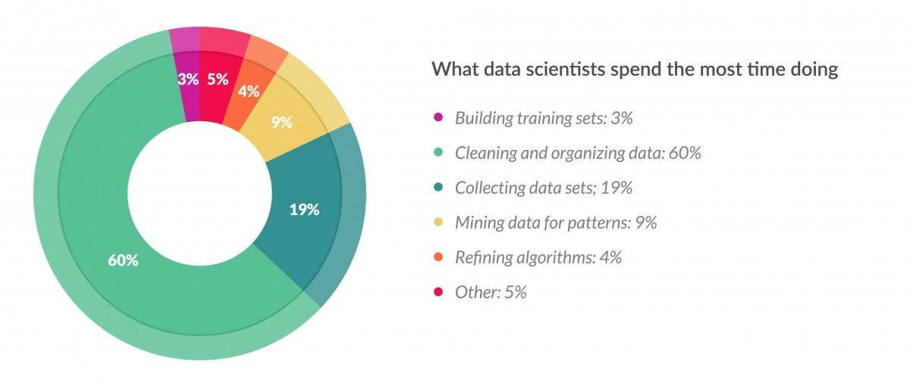Figure from Forbes
Please forgive the Pie Chart
Intro/Case Study
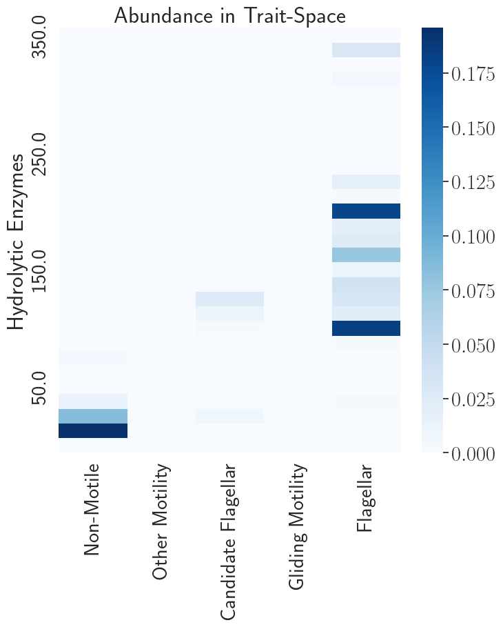
- Data on how bacteria get their food in the ocean
- Getting data for this plot took months…..
- Many sources, data formats, quality issues, processing
By the end of the course:
- Find data you need and do all steps to prep it for analysis
- Build expertise in R and the
tidyverse - Use and understand relational databases and SQL
- Collaborate with Git and GitHub
- Introduce you to distributed computing and other tools for large datasets
- Improve your programming ability
- Know how to use LLMs to serve your goals
Vignette: Electricity and CO2
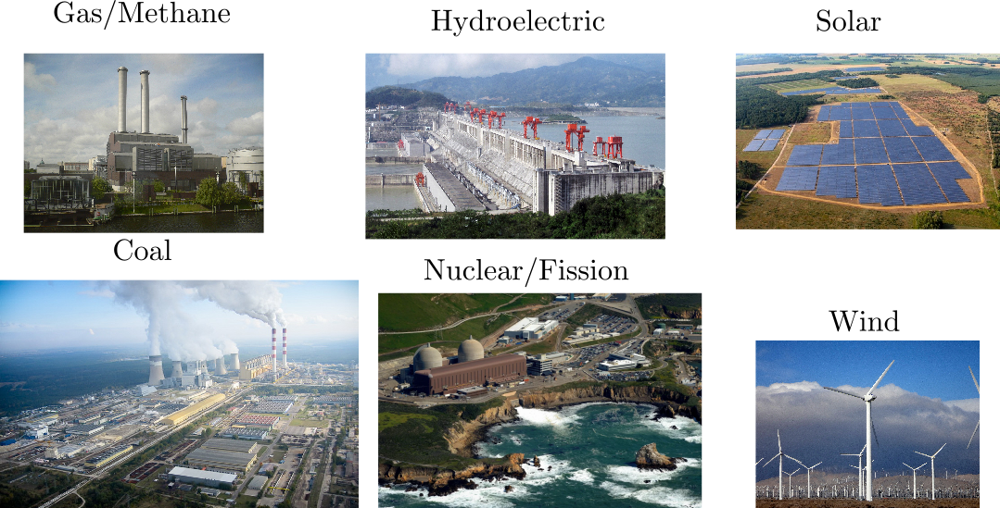Sources of Power, refs last slide
Electricity Generation Over Time
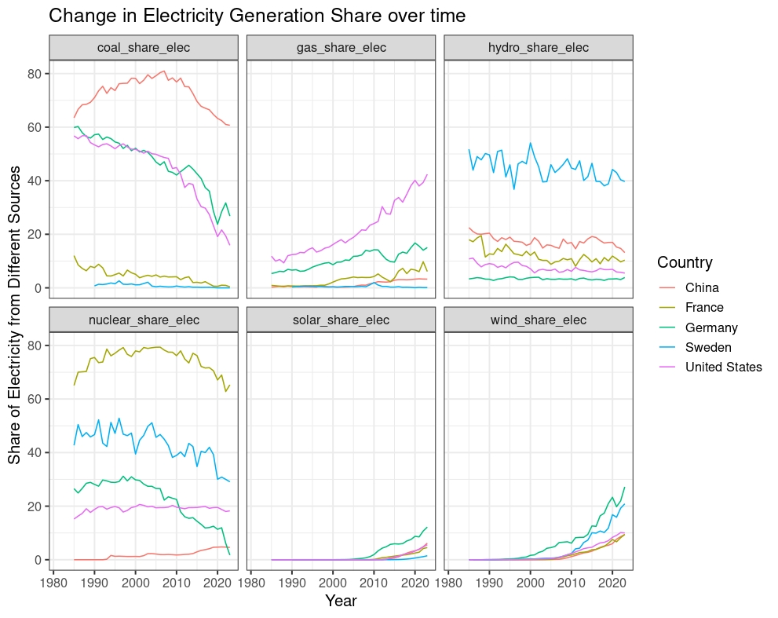Source: Our World in Data
Carbon Intensity of Electricity
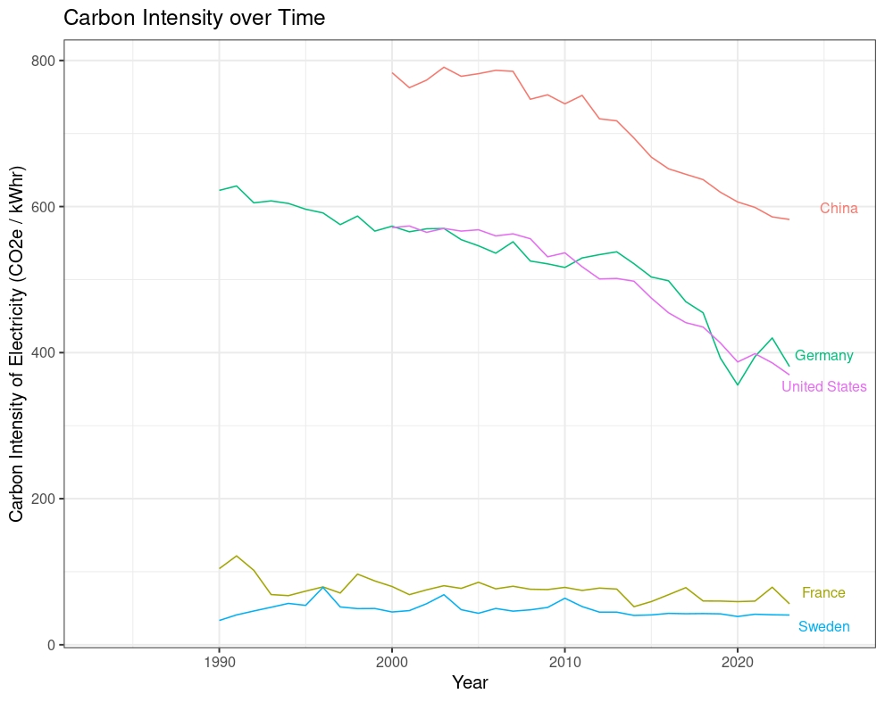Source: Our World in Data
Controls on Carbon Intensity
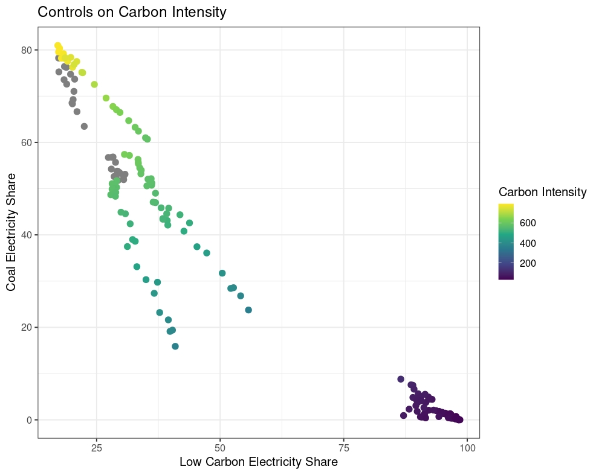Source: Our World in Data
Link to the Vignette
You can download the vignette from my github by clicking here
Remember to download the data if you want to render the file.
Syllabus and Course Site
- Full Syllabus on the course website:
- https://georgehagstrom.github.io/DATA607Fall2025/
- Course website contains links to weekly reading and homework assignments, meetup videos, course schedule, and other course materials
- Use the Brightspace page to submit assignments, in
pdfformat
Meetups
6:45-7:45 on Monday evening. Attending live preferred, watch video after if you can’t
Office Hours: On Zoom by appointment
Might try one “live coding” session per week
Communication and collaboration: https://cuny-msds.slack.com/archives/C08U8QRGKQ8
- Program workspace invite: https://join.slack.com/t/cuny-msds/shared_invite/zt-3ans1b3dz-5HhIols06wNraCMUhZ~jXw
Assignments
- Labs (50%): Weekly Programming assignments
- TidyVerse Recipes (10%): Collaborative intro to Git
- Project (25%)
- Assemble and explore a data set of your choosing
- Explore your interests, build your portfolio!
- Data Science in Context Presentation (5%)
- One 5 minute presentation, sign up for your presentation slot asap!
- Meetup Reflections and Introduction (10%)
How to do your homework
- Quarto Markdown Format
- Contains both code and content
- Templates on the website
- Submit a
pdfandqmdfile
htmlfiles do not contain figures, so I won’t be able to see them if you submit an html!
Research on LLMs in Education
- Early days, but mixed results
- Opinions range from ‘LLMs stop you from being able to think for yourself’ to ‘Concern over LLMs is just another moral panic’
- Your Brain on ChatGPT (I’m skeptical)
- Why knowledge is important in the age of AI (makes excellent points)
Research on LLMs in Education
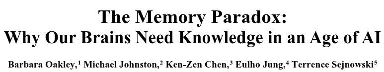Abstract
In the age of generative AI and ubiquitous digital tools, human cognition faces a structural paradox: as external aids become more capable, internal memory systems risk atrophy. Drawing on neuroscience and cognitive psychology, this paper examines how heavy reliance on AI systems and discovery-based pedagogies may impair the consolidation of declarative and procedural memory – systems essential for expertise, critical thinking, and long-term retention. We review how tools like ChatGPT and calculators can short-circuit the retrieval, error correction, and schema-building processes necessary for robust neural encoding. Notably, we highlight striking parallels between deep learning phenomena such as “grokking” and the neuroscience of overlearning and intuition. Empirical studies are discussed showing how premature reliance on AI during learning inhibits proceduralization and intuitive mastery. We argue that effective human-AI interaction depends on strong internal models – biological “schemata” and neural manifolds – that enable users to evaluate, refine, and guide AI output….
What I have Seen
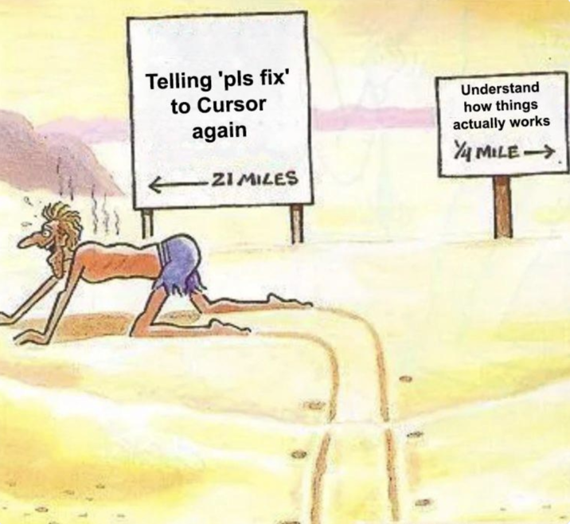- Do not let yourself become reliant on LLMs
My Recommendations
- Ask LLMs how something works
- Use LLMs for things you can easily check that are low stakes
- Use LLMs to check for grammar issues, to reword a sentence you struggle with
- Understand model differences and use professional tools (You can get 1 year free of google AI Pro…)
- Experiment!
My recommendations
- Don’t copy and paste
- Type by hand LLM generated code, understand how it works, maybe even delete it and try to recreate it
- Don’t use it to write or analyze for you
- Writing is thinking
- Don’t turn in something you don’t understand
Schedule
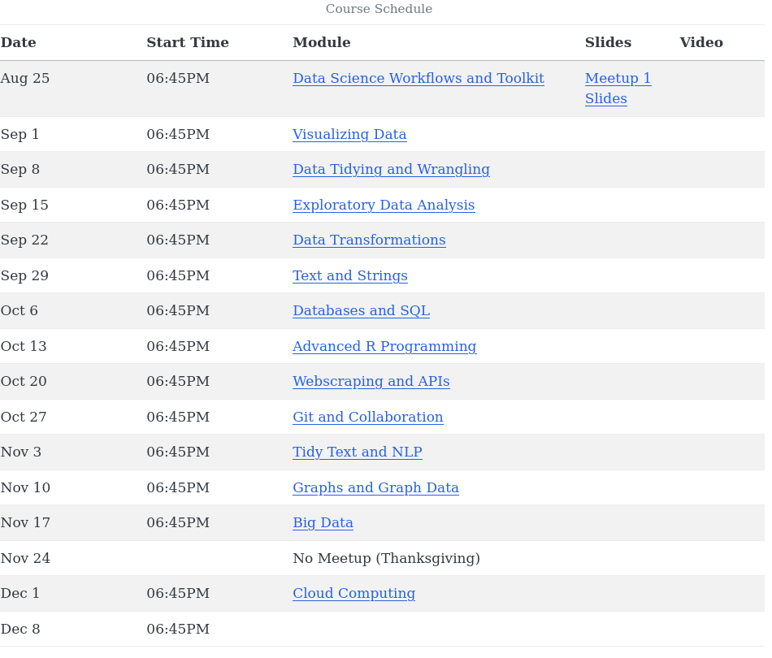Textbooks
Hadley Wickham, Mine Çetinkaya-Rundel, and Garrett Grolemund. (2023). R for Data Science (2e). O’Reilly
Jennifer Bryan. Happy Git and GitHub for the R User.
Julia Silge and David Robinson (2017). Text Mining with R. O’Reilly
Recommended: Wickham, H. Advanced R. Baca Raton, FL: Taylor & Francis Group.
Tidyverse: Opinionated Ecosystem
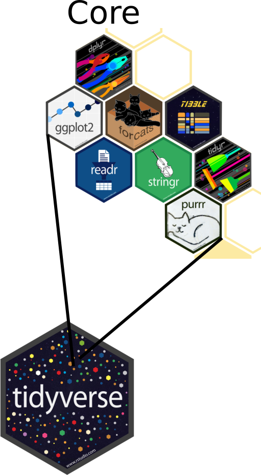
- Collection of compatible packages
- Shared philosophy, common grammar
- Strong Core, Many Extensions
- Advantages and Disadvantages
What to do this week?
- Readings:
- Intro and Chapter 28 of R4DS
- Quarto Tutorial
- Appendix on R Help Files
- Get software installed and configured:
- R, RStudio/Positron, git, latex
- I recommend following 1-15 in happygitwithr
- Write a post introducing yourself in the brightspace discussion board
- Sign up for your Data Science in Context Presentation
RStudio versus Positron
- Until recently RStudio was the most common R IDE
- Now community cautiously switching to Positron
- Use Positron if:
- You have used VS Code before/have programming experience
- Want to future proof yourself
- Use RStudio if:
- You like it more than positron
Community Building/Networking
- Be active in the slack!
- Look at the social channel for events
- Starting a “journal club”
- Join our linkedin group
Community Building/Networking
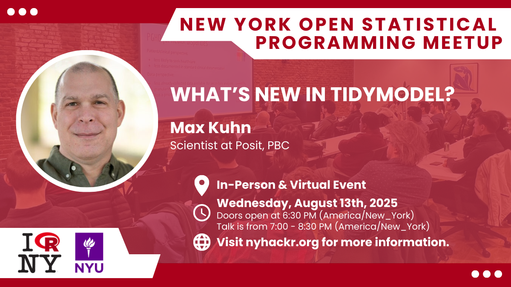- Once per month nyhackr.org
Image References
- Coal: By Morgre - Own work, CC BY-SA 3.0
- Gas/Methane: By Georg Slickers - Self-photographed, CC BY-SA 3.0
- Hydro: By Source file: Le Grand PortageDerivative work: Rehman - File:Three_Gorges_Dam,_Yangtze_River,_China.jpg, CC BY 2.0
- Solar: By Parabel GmbH - Own work, CC BY-SA 3.0
- Wind: By Erik Wilde from Berkeley, CA, USA - harvesting wind, CC BY-SA 2.0

DATA 607